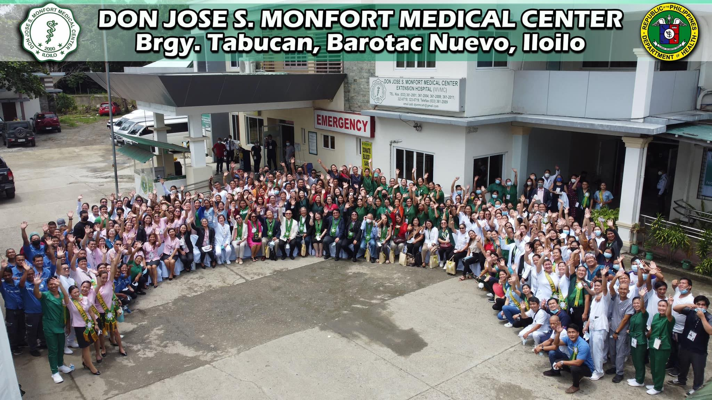

DON JOSE S. MONFORT MEDICAL CENTER
A government hospital in Barotac Nuevo, Iloilo offering secondary healthcare services with emergency, surgical, and outpatient care.
RAMON D. DUREMDES DISCTRICT HOSPITAL
Located in Dumangas, Iloilo, this district hospital provides basic medical, surgical, and maternity services to sorrounding communities.
WESTERN VISAYAS MEDICAL CENTER
A tertiary goverment hospital in Iloilo City with advanced medical services, specialty departments, and training programs for health.
WEST VISAYAS STATE UNVERSITY MEDICAL CENTER
Located in Jaro, Iloilo City, WVSUMC is a tertiary-level teaching hospital providing comprehensive medical services and serves as a training ground for medical and allied health students.
ALEOSAN DISTRICT HOSPITAL
Situated in Barangay Bancal, Alimodian, Aleosan District Hospital serves with general surgery, OB-Gyne, pediatrics, and diagnostic services.
REP. PEDRO G. TRONO MEMORIAL HOSPITAL
A district hospital in Guimbal, Iloilo providing essential healthcare services including pediatrics, OB-GYN, and emergency care.
ILOILO PROVINCIAL HOSPITAL
A government-run Level II hospital in Pototan, Iloilo, providing essential medical services to the province and nearby areas.
FEDERICO ROMAN TIRADOR SR. MEMORIAL DISTRICT HOSPITAL
a local government-run healthcare facility located in Janiuay, Iloilo, serving the medical needs of the surrounding communities in Western Visayas.
FAMILY PLANNING ORGANIZATION OF THE PHILIPPINES (FPOP)
PLACEHOLDER
×
Hospital Name
About
Hospital description
SERVICES OFFERED:
Service Title
▼
Service description content